МОБИЛЬНОЕ Участник (Telegram Mini App)
Что видит участник медиа-тура. Разрешение 375×812 (iPhone), стилистика GTA Vice City Neon.
Участник
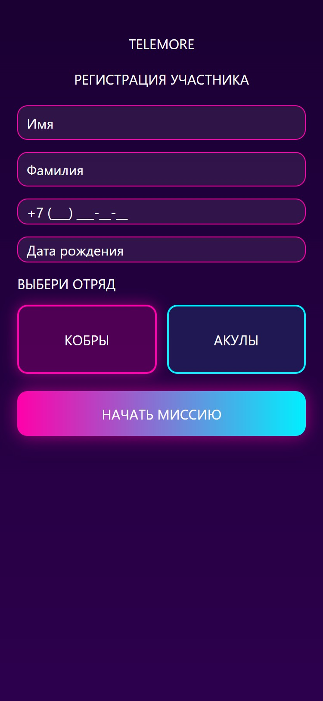
1. Регистрация
Первый вход в приложение. Анкета участника: имя, фамилия, телефон, дата рождения, соцсети. Выбор отряда (Кобры / Акулы).
Telegram initData
Выбор отряда
Первичная анкета
Участник
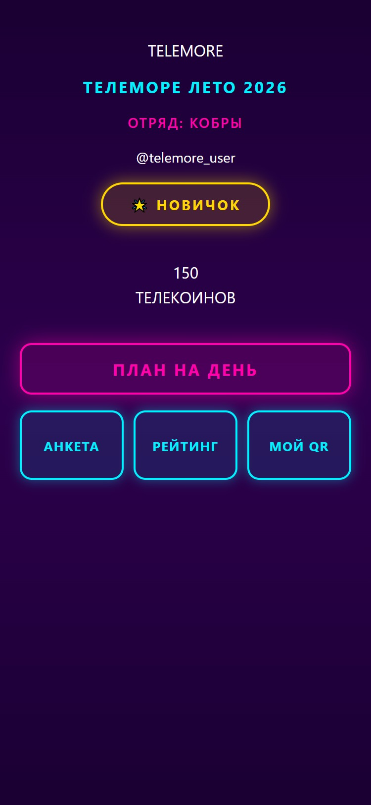
2. Главный экран
Домашний экран. Баланс Телекоинов крупно, название тура и отряда, последняя ачивка, план дня и навигация к остальным разделам.
Баланс XP
Навигация
Ачивка-бейдж
Участник
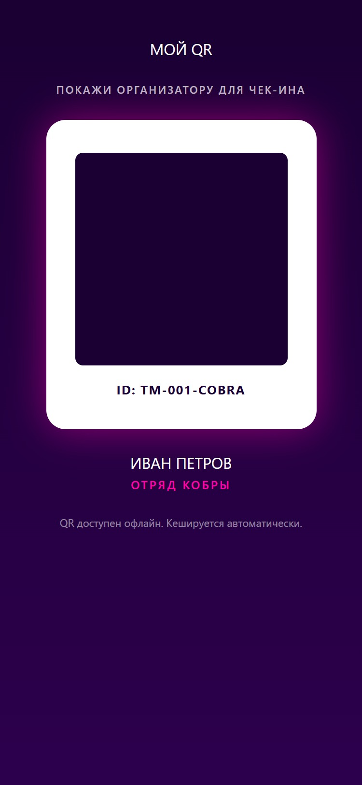
3. Мой QR
QR-код участника, который продюсеры сканируют для чек-ина и начисления Телекоинов. Доступен офлайн (кэширование).
Офлайн-кэш
Уникальный ID
Для чек-инов
Участник
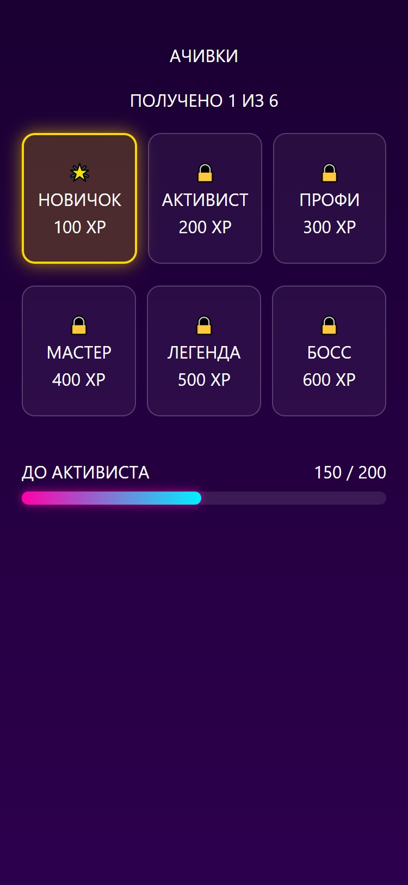
4. Ачивки
Сетка 6 достижений. Полученные — цветные с glow. Неполученные — locked с замком и порогом XP. Прогресс до следующей.
Авто-выдача
Прогресс-бар
Настраиваются в админке
Участник
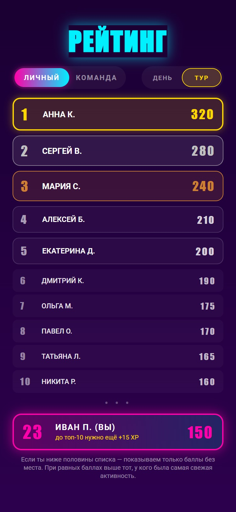
5. Рейтинг
Топ-10 участников + твоё место после разделителя (если ты вне топа). Переключатели «Личный/Команда» и «День/Тур». Приоритет по свежести активности.
Топ + Я
Битва отрядов
Анонимизация*
Участник
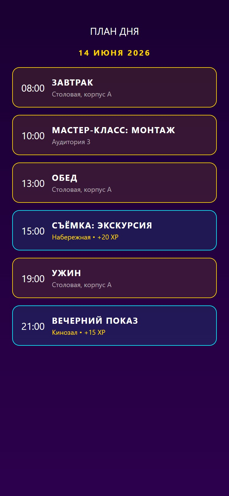
6. План дня
Timeline расписания на текущий день. События с временем начала, названием и локацией. Бот также рассылает план в общий чат утром.
Timeline
XP за посещение
Авто-рассылка
Продюсер
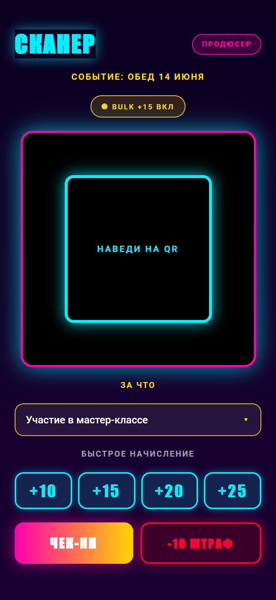
7. Сканер (мобилка продюсера)
Мобильный сканер для продюсера в поле. Камера QR, быстрые пресеты начисления (+10/+15/+20/+25), штраф −10, bulk-режим для массовых начислений.
Live камера
Bulk-сессия
Защита от дублей
АДМИН Продюсер (Desktop)
Рабочее место продюсера. Разрешение 1280×800, light-стиль wireframes (готовы для согласования и обрастания финальным визуалом).
Продюсер
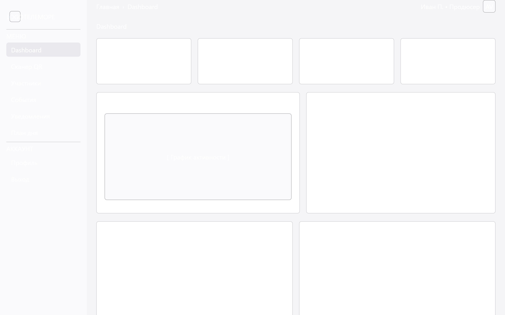
A1. Dashboard
Главный экран продюсера. KPI (участников / средний баланс / чек-инов / активных событий), график активности за 7 дней, топ-5, события сегодня и транзакции от всех продюсеров.
4 KPI
График
Live транзакции
Продюсер
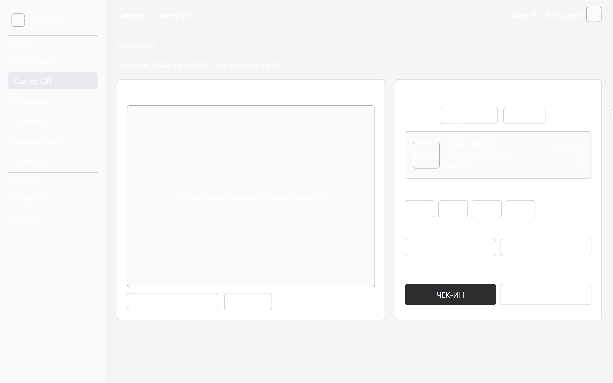
A2. Сканер QR (web)
Desktop-версия сканера для работы со стационарной камерой/ноутбука. Переключатель «Одиночный / Bulk +15 всем подряд», карточка участника после скана, быстрые пресеты и причины штрафов.
Bulk-режим
Live-превью
Счётчик сессии
Продюсер
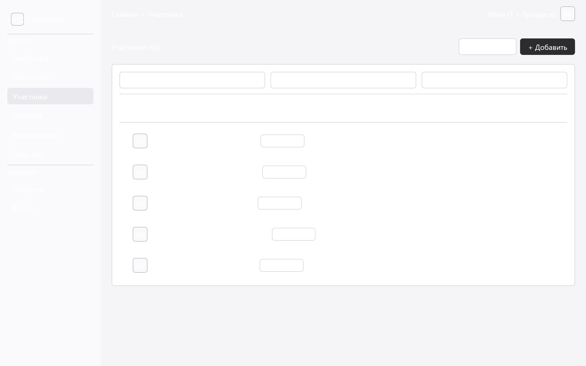
A3. Участники
Таблица всех 60 участников с поиском, фильтрами (отряд, сортировка по балансу). Переход в карточку участника, быстрый экспорт CSV.
Поиск
Фильтры
Экспорт
Продюсер
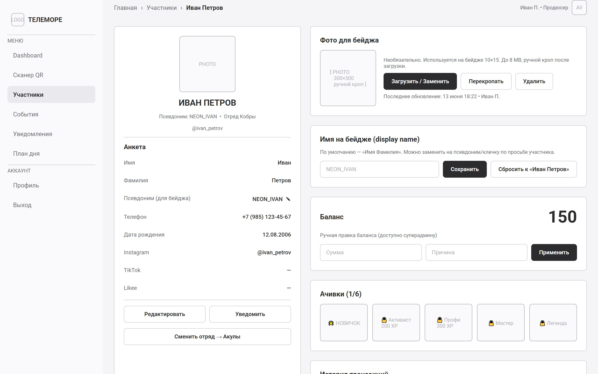
A4. Карточка участника
Полный профиль: анкета, псевдоним для бейджа, фото (загружает продюсер), баланс с правкой, ачивки, история транзакций с откатом за 24 часа, смена отряда.
Фото для бейджа
Псевдоним
Откат 24ч
Смена отряда
Продюсер
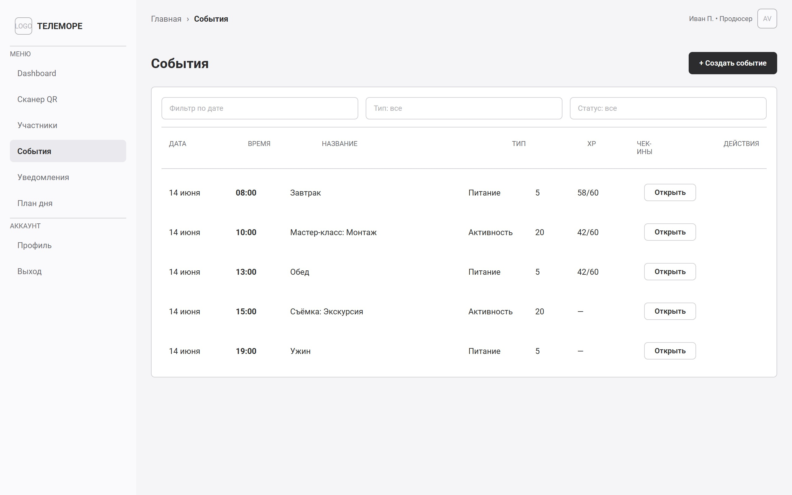
A5. События
Таблица всех событий смены (завтраки, мастер-классы, экскурсии, ужины). Фильтры по дате / типу / статусу. Быстрое создание нового события.
CRUD событий
Статистика чек-инов
Продюсер
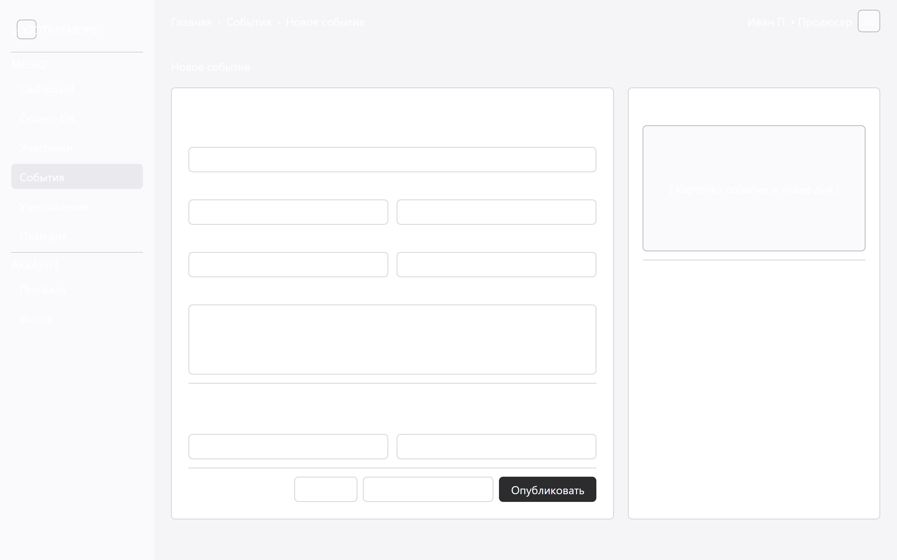
A6. Редактор события
Форма создания/редактирования: название, тип, дата/время, описание, XP за чек-ин, лимит чек-инов, чекбоксы (обязательное, только отряд, рассылка, повтор).
Форма
Авто-XP
Геймификация
Продюсер
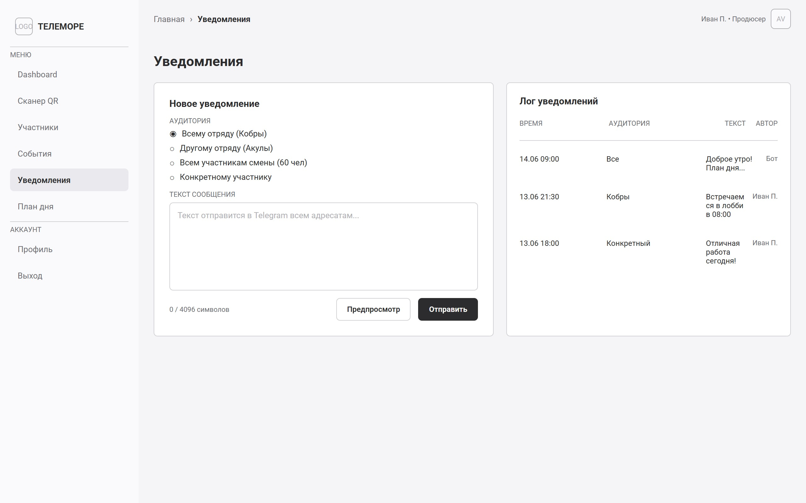
A7. Уведомления
Компоновщик push-уведомлений в Telegram. Выбор аудитории: свой отряд / другой отряд / всем 60 участникам / конкретному человеку. Лог всех отправок.
4 аудитории
Лог истории
Предпросмотр
Продюсер
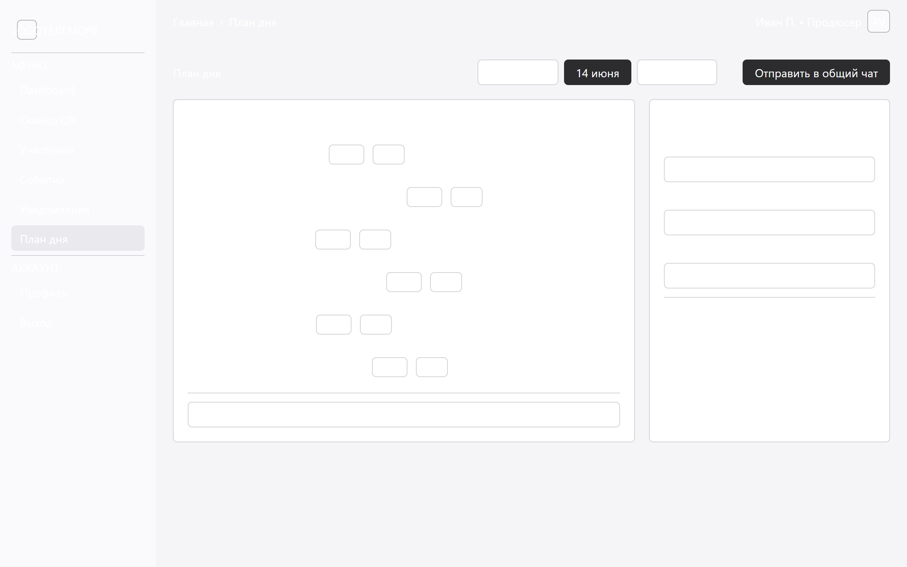
A8. План дня (редактор)
Визуальный timeline-редактор расписания. Drag&drop слотов, добавление / редактирование / удаление активностей. Настройка авто-рассылки в бот.
Drag&Drop
Timeline
Авто-рассылка
Продюсер
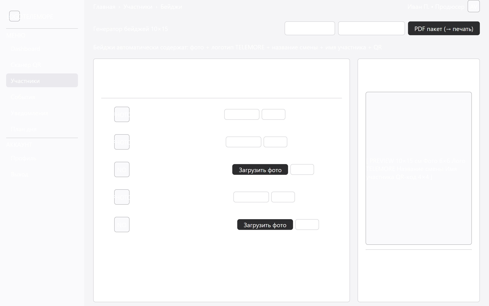
A11. Генератор бейджей
Пакетный PDF-генератор бейджей 10×15 см. Таблица участников с чекбоксами, статус бейджа (готов / нужно фото), preview с наложением и финальный PDF-пакет для печати.
A6 10×15
Пакетный PDF
Фото + QR
SUPER Суперадмин (Владелец системы)
Управление всем проектом: смены, роли, ачивки, White Label настройки, экспорт в Google Sheets.
Суперадмин
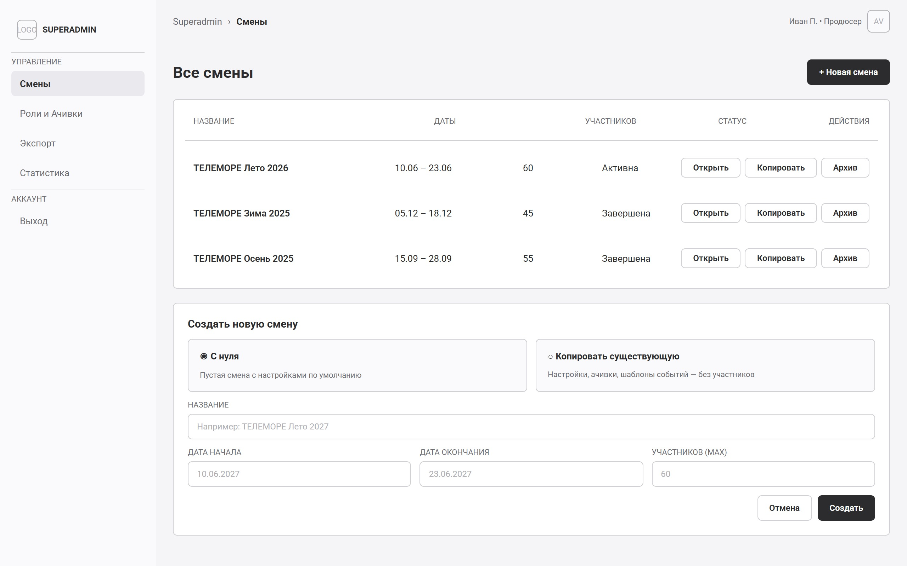
A9. Управление сменами
Список всех туров, статистика. Wizard создания новой смены «с нуля» или копированием существующей (White Label — берём настройки, ачивки, шаблоны событий, без участников).
Multi-tenant
Копирование
Архив
Суперадмин
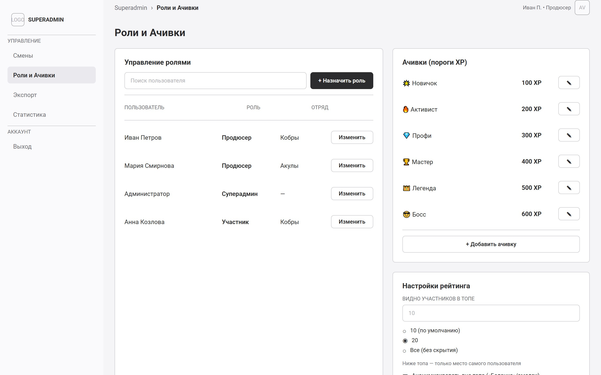
A10. Роли / Ачивки / Лидерборд / Экспорт
Управление ролями (продюсер / участник / суперадмин), CRUD ачивок (пороги XP + иконки), настройки рейтинга (видимых 10/20/все + анонимизация), экспорт в Google Sheets.
Роли
Ачивки per-tour
Настройки лидерборда
Google Sheets